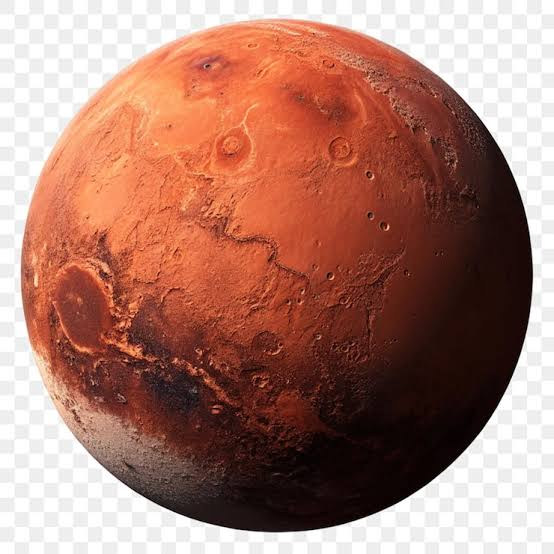

Marte es un mundo frío y desértico. La temperatura media en Marte es de -65 grados Celsius (-85 grados Fahrenheit), muy por debajo del punto de congelación. Marte tiene la mitad del tamaño de la Tierra. A veces es llamado el planeta rojo. Es rojo debido al hierro oxidado de su suelo.